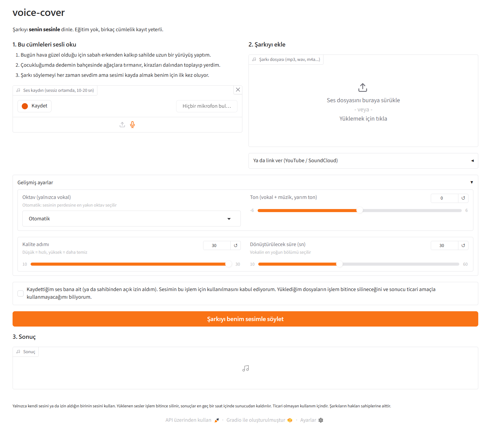

voice-cover
Birkaç cümlelik ses kaydından, bir şarkıyı senin sesinle yeniden söyleten uçtan uca ses dönüştürme hattı. Model eğitimi yok, zero-shot çalışıyor.

Nasıl çalışır
- Ses kaydıSüre, sessizlik ve clipping kontrolü, 44.1 kHz mono hazırlık
- DemucsŞarkı vokal ve müzik olarak ayrılır
- Bölüm seçimiVokalin en yoğun kısmı otomatik bulunur
- F0 analiziSesinle şarkının perdesi karşılaştırılır, oktav seçilir
- Seed-VCF0 koşullu zero-shot dönüştürme
- MiksTon kaydırma, -14 LUFS, cover.wav
Öne çıkan teknik kararlar
Bağımlılık izolasyonu
Seed-VC (GPL-3.0) kopyalanmadı. Sabit commit'te klonlanıp kendi Python 3.10 ortamında subprocess ile çalışıyor. Ana ortamla sürüm çakışması yok.
Minimal kurulum
Resmi requirements yerine import zinciri izlendi. Derleme isteyen paketler olmadan 26 doğrudan bağımlılık sabit sürümle kuruluyor.
Perde mantığı
Ton kaydırma vokal ve müziğe birlikte, oktav kaydırma yalnızca vokale uygulanıyor. Notalar değişmediği için müzikle uyum bozulmuyor.
Gizlilik
Rıza onayı olmadan çalışmıyor. Yüklenen sesler ve ara dosyalar iş bitince siliniyor, sonuçlar en geç bir saatte temizleniyor.
Ölçümler (GTX 1650, 4 GB)
| Senaryo | Seed-VC süresi | RTF | Tepe VRAM |
|---|---|---|---|
| 30 sn vokal, 30 adım | 515 sn | 16.4 | 3120 MB |
| 20 sn vokal, 15 adım (uçtan uca 224 sn) | 192 sn | 8.5 | 3120 MB |
Sürenin büyük kısmı difüzyon adımlarında geçiyor (adım başına yaklaşık 5 sn). Demucs 3,4 dakikalık şarkıyı yaklaşık 22 sn'de ayırıyor.
Bu sayfa hakkında
Bu bir vitrin sayfası, burada model çalışmıyor. Projeyi kendi bilgisayarında çalıştırmak için GitHub'daki kurulum adımlarına bak: python scripts/setup_seedvc.py ve python app.py.